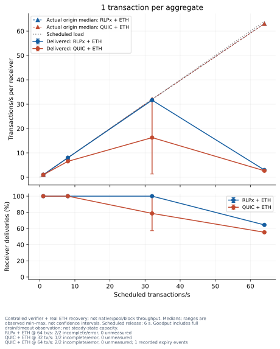
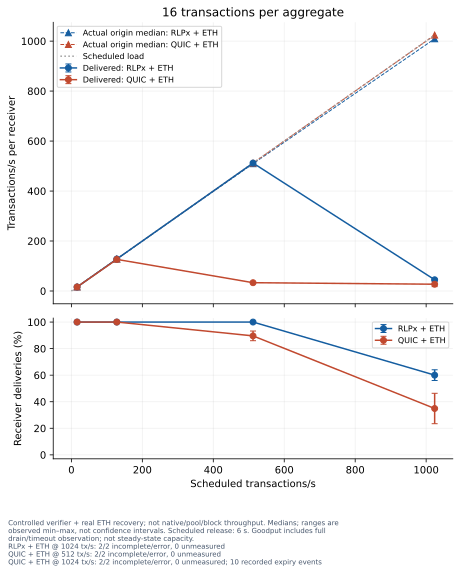
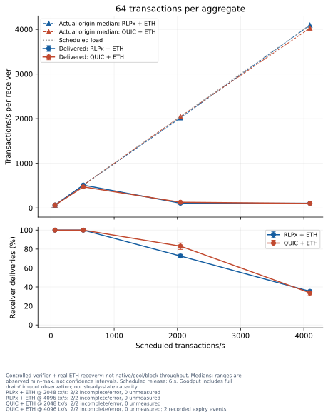
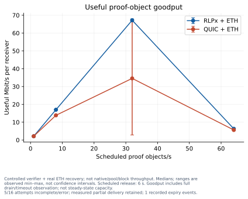
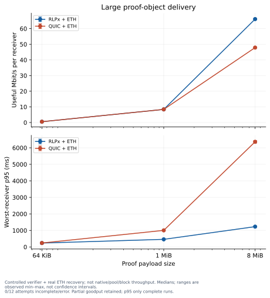
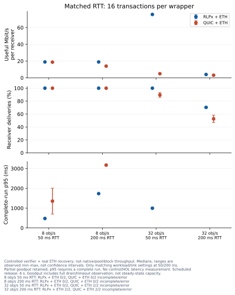
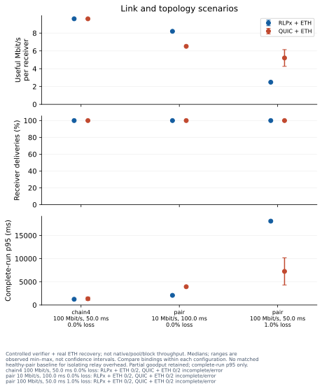
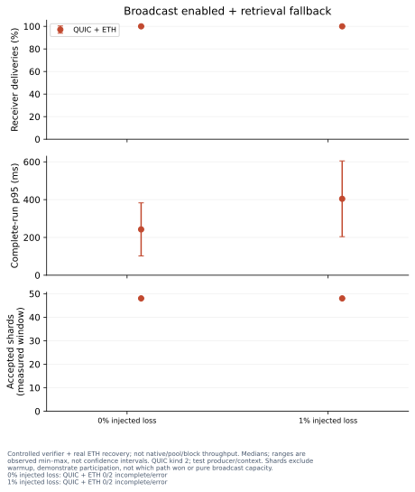
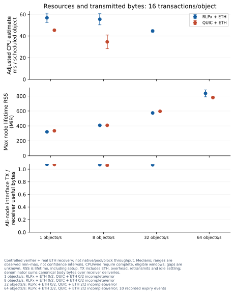
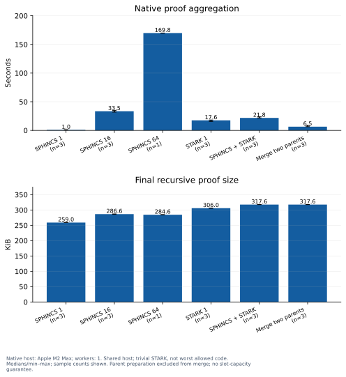

Production RLPx and QUIC bindings with authenticated ETH envelope recovery. Proof contents, pool admission and the verifier are controlled fixtures: completion means validated/recovered wrappers, not successful pool admission, native proving or block throughput. Broadcast-enabled kind-2 runs also allow on-demand retrieval fallback, so completion can use either path. Measured and lifetime accepted-shard counts show coded-shard usage during measurement and including warmup, respectively; they do not identify which path completed first or pure broadcast capacity. Broadcast uses a test signer and accepts the reconstructed consensus context; it does not exercise live CL anchor validation.
Load scenarios: two processes, 100 Mbit/s per node, 50 ms RTT, no injected loss. Each aggregate contains distinct transactions and dependencies. Other link conditions appear in the table. Every attempted run is retained; failed runs are counted, not replaced.










Native timing rows and provenance. Native host: Apple M2 Max; workers: 1. Check capture contention and memory scope in the provenance. Transport runs use a different host. The STARK fixture is a trivial real program, not worst-case execution. Compare measurement scope, not raw CPU costs across machines.
CPU counters retain their actual snapshot windows. Idle-adjusted CPU is an estimate; 10/84 runs have ineligible or missing CPU snapshots because sampling was late, warmup was unfinished, measured activity preceded sampling, or metadata is unavailable. Failed/incomplete runs are also omitted from adjusted CPU comparisons. See raw snapshot quality reasons; raw cpu_ms_total is retained.
Fetch starts, reassembly and expiry events are measured counters, not unique object histories. Retries can increase starts or expiries. Minimum never fetched is a conservative lower bound: expected receiver deliveries minus fetch starts, clamped at zero, only when counts are available and consistent. Expiry events must not be subtracted from missing objects to infer an exact never-fetched count. Startup log events precede the reset measured counters and are reported separately in the capture notes. No loss or scheduling cause is inferred here.
| Attempt | Delivered / expected | Fetch starts | Reassembled | Expiry events | Minimum never fetched |
|---|---|---|---|---|---|
| load-rlpx-tx1-r64-rep1 | 247 / 384 | 247 | 247 | 0 | 137 |
| load-rlpx-tx16-r64-rep1 | 246 / 384 | 246 | 246 | 0 | 138 |
| load-rlpx-tx64-r32-rep1 | 136 / 192 | 136 | 136 | 0 | 56 |
| load-rlpx-tx64-r64-rep1 | 140 / 384 | 140 | 140 | 0 | 244 |
| load-ethp2p-tx1-r32-rep1 | 110 / 192 | 110 | 110 | 0 | 82 |
| load-ethp2p-tx1-r64-rep1 | 216 / 384 | 217 | 216 | 1 | 167 |
| load-ethp2p-tx16-r32-rep1 | 179 / 192 | 179 | 179 | 0 | 13 |
| load-ethp2p-tx16-r64-rep1 | 90 / 384 | 97 | 90 | 7 | 287 |
| load-ethp2p-tx64-r32-rep1 | 166 / 192 | 166 | 166 | 0 | 26 |
| load-ethp2p-tx64-r64-rep1 | 119 / 384 | 121 | 119 | 2 | 263 |
| load-rlpx-tx1-r64-rep2 | 248 / 384 | 248 | 248 | 0 | 136 |
| load-rlpx-tx16-r64-rep2 | 215 / 384 | 215 | 215 | 0 | 169 |
| load-rlpx-tx64-r32-rep2 | 143 / 192 | 143 | 143 | 0 | 49 |
| load-rlpx-tx64-r64-rep2 | 132 / 384 | 132 | 132 | 0 | 252 |
| load-ethp2p-tx1-r64-rep2 | 209 / 384 | 209 | 209 | 0 | 175 |
| load-ethp2p-tx16-r32-rep2 | 165 / 192 | 165 | 165 | 0 | 27 |
| load-ethp2p-tx16-r64-rep2 | 178 / 384 | 181 | 178 | 3 | 203 |
| load-ethp2p-tx64-r32-rep2 | 153 / 192 | 153 | 153 | 0 | 39 |
| load-ethp2p-tx64-r64-rep2 | 141 / 384 | 141 | 141 | 0 | 243 |
| rtt200-rlpx-tx16-r32-rep1 | 137 / 192 | 137 | 137 | 0 | 55 |
| rtt200-ethp2p-tx16-r32-rep1 | 90 / 192 | 90 | 90 | 0 | 102 |
| rtt200-rlpx-tx16-r32-rep2 | 133 / 192 | 133 | 133 | 0 | 59 |
| rtt200-ethp2p-tx16-r32-rep2 | 112 / 192 | 112 | 112 | 0 | 80 |
p95 is shown only for complete runs. Goodput includes partial delivery, queue drain and bounded controller-observation overhead: its window is the maximum of the schedule, controller stop and last recorded node activity. Wire-counter windows also include post-warmup idle settling before common start; timestamps are retained and aborted windows are ineligible for wire comparisons. Error bars are observed ranges, not confidence intervals. Actual origin rate is released objects divided by first-to-last release span plus one configured interval; latency begins actual origination and excludes earlier scheduler lateness. Unknown measurements remain unknown, not zero. Native and transport measurements use different hosts and must not be compared as a single throughput pipeline.
| Scenario | Runs | Scheduled objects/s | Actual origin objects/s | Released / scheduled objects | Useful Mbit/s | Worst-receiver p95 ms | Failed runs | Missing objects | Measured / lifetime accepted shards | Errors |
|---|---|---|---|---|---|---|---|---|---|---|
| broadcast-ethp2p-l0 | 2 | 0.0833333 | 0.08 | 6/6 | 0.20 | 242.4 | 0 | 0 | 96 / 128 | — |
| broadcast-ethp2p-l1 | 2 | 0.0833333 | 0.08 | 6/6 | 0.20 | 404.3 | 0 | 0 | 96 / 128 | — |
| link-ethp2p-chain4-m100-d50-l0 | 2 | 4 | 4.00 | 48/48 | 9.60 | 1348.4 | 0 | 0 | — / — | — |
| link-ethp2p-pair-m10-d100-l0 | 2 | 4 | 4.00 | 48/48 | 6.51 | 3942.9 | 0 | 0 | — / — | — |
| link-ethp2p-pair-m100-d50-l1 | 2 | 4 | 4.00 | 48/48 | 5.21 | 7253.0 | 0 | 0 | — / — | — |
| link-rlpx-chain4-m100-d50-l0 | 2 | 4 | 4.00 | 48/48 | 9.60 | 1237.5 | 0 | 0 | — / — | — |
| link-rlpx-pair-m10-d100-l0 | 2 | 4 | 4.00 | 48/48 | 8.20 | 2082.1 | 0 | 0 | — / — | — |
| link-rlpx-pair-m100-d50-l1 | 2 | 4 | 3.99 | 48/48 | 2.49 | 18097.3 | 0 | 0 | — / — | — |
| load-ethp2p-tx1-r1 | 2 | 1 | 1.00 | 12/12 | 2.12 | 447.4 | 0 | 0 | — / — | — |
| load-ethp2p-tx1-r32 | 2 | 32 | 32.01 | 384/384 | 34.57 | 1298.3 | 1 | 82 | — / — | — |
| load-ethp2p-tx1-r64 | 2 | 64 | 63.03 | 768/768 | 5.63 | — | 2 | 343 | — / — | — |
| load-ethp2p-tx1-r8 | 2 | 8 | 8.01 | 96/96 | 13.86 | 3480.8 | 0 | 0 | — / — | — |
| load-ethp2p-tx16-r1 | 2 | 1 | 1.00 | 12/12 | 2.36 | 460.0 | 0 | 0 | — / — | — |
| load-ethp2p-tx16-r32 | 2 | 32 | 32.00 | 384/384 | 4.91 | — | 2 | 40 | — / — | — |
| load-ethp2p-tx16-r64 | 2 | 64 | 64.01 | 768/768 | 4.01 | — | 2 | 500 | — / — | — |
| load-ethp2p-tx16-r8 | 2 | 8 | 8.00 | 96/96 | 18.69 | 1353.2 | 0 | 0 | — / — | — |
| load-ethp2p-tx64-r1 | 2 | 1 | 1.00 | 12/12 | 2.40 | 613.9 | 0 | 0 | — / — | — |
| load-ethp2p-tx64-r32 | 2 | 32 | 32.00 | 384/384 | 4.80 | — | 2 | 65 | — / — | — |
| load-ethp2p-tx64-r64 | 2 | 64 | 62.93 | 768/768 | 3.82 | — | 2 | 508 | — / — | — |
| load-ethp2p-tx64-r8 | 2 | 8 | 8.00 | 96/96 | 17.72 | 2231.2 | 0 | 0 | — / — | — |
| load-rlpx-tx1-r1 | 2 | 1 | 1.00 | 12/12 | 2.12 | 342.7 | 0 | 0 | — / — | — |
| load-rlpx-tx1-r32 | 2 | 32 | 32.00 | 384/384 | 67.19 | 956.3 | 0 | 0 | — / — | — |
| load-rlpx-tx1-r64 | 2 | 64 | 63.07 | 768/768 | 6.31 | — | 2 | 273 | — / — | — |
| load-rlpx-tx1-r8 | 2 | 8 | 7.99 | 96/96 | 16.98 | 462.9 | 0 | 0 | — / — | — |
| load-rlpx-tx16-r1 | 2 | 1 | 1.00 | 12/12 | 2.36 | 345.7 | 0 | 0 | — / — | — |
| load-rlpx-tx16-r32 | 2 | 32 | 31.84 | 384/384 | 75.66 | 995.5 | 0 | 0 | — / — | — |
| load-rlpx-tx16-r64 | 2 | 64 | 63.08 | 768/768 | 6.64 | — | 2 | 307 | — / — | — |
| load-rlpx-tx16-r8 | 2 | 8 | 7.99 | 96/96 | 18.92 | 476.0 | 0 | 0 | — / — | — |
| load-rlpx-tx64-r1 | 2 | 1 | 1.00 | 12/12 | 2.40 | 495.8 | 0 | 0 | — / — | — |
| load-rlpx-tx64-r32 | 2 | 32 | 31.53 | 384/384 | 4.02 | — | 2 | 105 | — / — | — |
| load-rlpx-tx64-r64 | 2 | 64 | 64.00 | 768/768 | 3.94 | — | 2 | 496 | — / — | — |
| load-rlpx-tx64-r8 | 2 | 8 | 8.00 | 96/96 | 19.19 | 784.5 | 0 | 0 | — / — | — |
| rtt200-ethp2p-tx16-r32 | 2 | 32 | 32.00 | 384/384 | 3.10 | — | 2 | 182 | — / — | — |
| rtt200-ethp2p-tx16-r8 | 2 | 8 | 7.98 | 96/96 | 13.93 | 3173.9 | 0 | 0 | — / — | — |
| rtt200-rlpx-tx16-r32 | 2 | 32 | 31.75 | 384/384 | 3.95 | — | 2 | 114 | — / — | — |
| rtt200-rlpx-tx16-r8 | 2 | 8 | 8.00 | 96/96 | 18.92 | 1732.1 | 0 | 0 | — / — | — |
| size-ethp2p-1048576 | 2 | 1 | 1.00 | 12/12 | 8.39 | 1004.0 | 0 | 0 | — / — | — |
| size-ethp2p-65536 | 2 | 1 | 1.00 | 12/12 | 0.53 | 239.2 | 0 | 0 | — / — | — |
| size-ethp2p-8388608 | 2 | 1 | 1.00 | 12/12 | 47.89 | 6363.6 | 0 | 0 | — / — | — |
| size-rlpx-1048576 | 2 | 1 | 1.00 | 12/12 | 8.39 | 460.6 | 0 | 0 | — / — | — |
| size-rlpx-65536 | 2 | 1 | 1.00 | 12/12 | 0.53 | 236.2 | 0 | 0 | — / — | — |
| size-rlpx-8388608 | 2 | 1 | 1.00 | 12/12 | 66.10 | 1229.4 | 0 | 0 | — / — | — |
Every value is a median of available attempts; eligibility counts are per metric. Adjusted CPU is summed across nodes per scheduled object and requires a complete run plus eligible snapshots. Raw CPU milliseconds and interface TX MiB retain partial attempts. RSS is the maximum node process lifetime peak, including setup, not transfer-only memory. The TX/useful ratio divides summed all-node interface transmit bytes by canonical body bytes times validated receiver deliveries, and requires a complete eligible counter window. It includes ETH envelopes, control, retransmissions and idle settling; this is not pure framing overhead. Redials and lost peers are medians per attempt.
| Scenario | Adjusted CPU ms/object | CPU eligible | Raw CPU ms | Lifetime RSS MiB | TX/useful ratio | Wire eligible | Raw TX MiB | Redials | Lost peers |
|---|---|---|---|---|---|---|---|---|---|
| broadcast-ethp2p-l0 | 58.90 | 2/2 | 827.13 | 335.33 | 2.46 | 2/2 | 2.11 | 0.00 | 0.00 |
| broadcast-ethp2p-l1 | 75.78 | 2/2 | 870.95 | 334.97 | 2.16 | 2/2 | 1.86 | 0.00 | 0.00 |
| link-ethp2p-chain4-m100-d50-l0 | 93.05 | 2/2 | 2667.12 | 380.65 | 1.05 | 2/2 | 21.66 | 0.00 | 0.00 |
| link-ethp2p-pair-m10-d100-l0 | 48.32 | 2/2 | 1375.30 | 371.36 | 1.06 | 2/2 | 7.28 | 0.00 | 0.00 |
| link-ethp2p-pair-m100-d50-l1 | — | 0/2 | 1524.02 | 369.64 | 1.07 | 2/2 | 7.35 | 0.00 | 0.00 |
| link-rlpx-chain4-m100-d50-l0 | 129.18 | 1/2 | 3412.20 | 358.98 | 1.07 | 2/2 | 22.10 | 0.00 | 0.00 |
| link-rlpx-pair-m10-d100-l0 | 59.00 | 2/2 | 1559.31 | 356.82 | 1.07 | 2/2 | 7.37 | 0.00 | 0.00 |
| link-rlpx-pair-m100-d50-l1 | 50.66 | 2/2 | 1725.86 | 361.45 | 1.08 | 2/2 | 7.44 | 0.00 | 0.00 |
| load-ethp2p-tx1-r1 | 42.23 | 1/2 | 417.43 | 332.29 | 1.08 | 2/2 | 1.64 | 0.00 | 0.00 |
| load-ethp2p-tx1-r32 | 30.02 | 1/2 | 5810.93 | 608.66 | 1.06 | 1/2 | 40.27 | 0.00 | 0.00 |
| load-ethp2p-tx1-r64 | — | 0/2 | 9195.97 | 782.90 | — | 0/2 | 56.85 | 0.00 | 0.00 |
| load-ethp2p-tx1-r8 | 29.66 | 2/2 | 1648.03 | 404.27 | 1.05 | 2/2 | 12.77 | 0.00 | 0.00 |
| load-ethp2p-tx16-r1 | 45.36 | 2/2 | 422.63 | 335.05 | 1.07 | 2/2 | 1.82 | 0.00 | 0.00 |
| load-ethp2p-tx16-r32 | — | 0/2 | 7868.11 | 596.05 | — | 0/2 | 50.93 | 0.00 | 0.00 |
| load-ethp2p-tx16-r64 | — | 0/2 | 8160.32 | 780.53 | — | 0/2 | 39.86 | 0.00 | 0.00 |
| load-ethp2p-tx16-r8 | 34.63 | 2/2 | 1796.74 | 408.08 | 1.06 | 2/2 | 14.39 | 0.00 | 0.00 |
| load-ethp2p-tx64-r1 | 57.24 | 1/2 | 469.36 | 336.82 | 1.09 | 2/2 | 1.87 | 0.00 | 0.00 |
| load-ethp2p-tx64-r32 | — | 0/2 | 9716.45 | 648.64 | — | 0/2 | 49.05 | 0.00 | 0.00 |
| load-ethp2p-tx64-r64 | — | 0/2 | 9949.34 | 911.88 | — | 0/2 | 39.94 | 0.00 | 0.00 |
| load-ethp2p-tx64-r8 | 48.29 | 2/2 | 2458.71 | 421.93 | 1.09 | 2/2 | 14.94 | 0.00 | 0.00 |
| load-rlpx-tx1-r1 | 56.14 | 2/2 | 444.41 | 319.56 | 1.08 | 2/2 | 1.63 | 0.00 | 0.00 |
| load-rlpx-tx1-r32 | 41.75 | 2/2 | 8136.77 | 600.80 | 1.07 | 2/2 | 52.07 | 0.00 | 0.00 |
| load-rlpx-tx1-r64 | — | 0/2 | 13665.56 | 799.14 | — | 0/2 | 67.16 | 0.00 | 0.00 |
| load-rlpx-tx1-r8 | 42.30 | 2/2 | 2150.77 | 393.35 | 1.07 | 2/2 | 13.02 | 0.00 | 0.00 |
| load-rlpx-tx16-r1 | 56.83 | 2/2 | 452.11 | 320.93 | 1.08 | 2/2 | 1.82 | 0.00 | 0.00 |
| load-rlpx-tx16-r32 | 44.67 | 2/2 | 8710.48 | 573.82 | 1.07 | 2/2 | 57.94 | 0.00 | 0.00 |
| load-rlpx-tx16-r64 | — | 0/2 | 13239.38 | 836.25 | — | 0/2 | 69.61 | 0.00 | 0.00 |
| load-rlpx-tx16-r8 | 55.49 | 2/2 | 2766.09 | 408.07 | 1.07 | 2/2 | 14.51 | 0.00 | 0.00 |
| load-rlpx-tx64-r1 | 63.54 | 2/2 | 479.73 | 323.17 | 1.08 | 2/2 | 1.86 | 0.00 | 0.00 |
| load-rlpx-tx64-r32 | — | 0/2 | 10790.38 | 617.17 | — | 0/2 | 43.08 | 0.00 | 0.00 |
| load-rlpx-tx64-r64 | — | 0/2 | 11899.75 | 873.33 | — | 0/2 | 42.02 | 0.00 | 0.00 |
| load-rlpx-tx64-r8 | 54.62 | 2/2 | 2734.86 | 402.02 | 1.08 | 2/2 | 14.82 | 0.00 | 0.00 |
| rtt200-ethp2p-tx16-r32 | — | 0/2 | 5994.78 | 571.54 | — | 0/2 | 30.29 | 0.00 | 0.00 |
| rtt200-ethp2p-tx16-r8 | 33.53 | 2/2 | 1977.49 | 397.47 | 1.05 | 2/2 | 14.26 | 0.00 | 0.00 |
| rtt200-rlpx-tx16-r32 | — | 0/2 | 9027.31 | 568.89 | — | 0/2 | 40.82 | 0.00 | 0.00 |
| rtt200-rlpx-tx16-r8 | 45.42 | 2/2 | 2316.19 | 408.59 | 1.07 | 2/2 | 14.51 | 0.00 | 0.00 |
| size-ethp2p-1048576 | 112.04 | 2/2 | 819.72 | 371.27 | 1.04 | 2/2 | 6.27 | 0.00 | 0.00 |
| size-ethp2p-65536 | 8.39 | 2/2 | 175.10 | 331.08 | 1.09 | 2/2 | 0.41 | 0.00 | 0.00 |
| size-ethp2p-8388608 | 774.16 | 2/2 | 4862.56 | 662.47 | 1.05 | 2/2 | 50.23 | 0.00 | 0.00 |
| size-rlpx-1048576 | 181.32 | 2/2 | 1191.46 | 362.20 | 1.07 | 2/2 | 6.43 | 0.00 | 0.00 |
| size-rlpx-65536 | 16.79 | 1/2 | 203.36 | 314.79 | 1.09 | 2/2 | 0.41 | 0.00 | 0.00 |
| size-rlpx-8388608 | 1245.26 | 2/2 | 7650.33 | 687.46 | 1.07 | 2/2 | 51.40 | 0.00 | 0.00 |
Raw results and measurement provenance · Separate reporting-source hash
Source revisions: 0178a8284058611a1a303d7608bd7f8600ecf1db